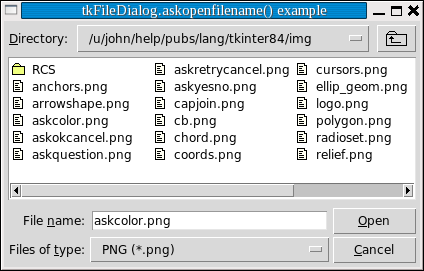

Модуль FileDialog предоставляет два различных всплывающих окна, которые вы можете использовать, чтобы дать пользователю возможность найти существующие или создать новые файлы.
.askopenfilename(option=value, ...).
Предназначено для случаев, когда пользователь хочет выбрать существующий файл. Если пользователь выберет несуществующий файл, появится всплывающее окно, информирующее его о том, что выбранный файл не существует.
.asksaveasfilename(option=value, ...).
Предназначено для случаев, когда пользователь хочет создать новый файл или заменить существующий. Если пользователь выберет существующий файл, появится всплывающее окно с сообщением о том, что файл уже существует, и вопросом, действительно ли он хочет его заменить.
Аргументы для обеих функций одинаковы:
defaultextension=s.
Расширение файла по умолчанию, строка, начинающаяся с точки (
'.'). Если ответ пользователя содержит точку, этот аргумент не имеет значения. В случае отсутствия точки он добавляется к ответу пользователя.
Например, если указать аргумент
defaultextension='.jpg'и пользователь введет'gojiro', имя возвращаемого файла будет'gojiro.jpg'.
filetypes=[(label1, pattern1), (label2, pattern2), ...].
Список двухэлементных кортежей, содержащих имена типов файлов и шаблоны, по которым будет выбираться то, что появится в листинге файлов. На изображении экрана ниже обратите внимание на выпадающее меню с надписью "Files of type:". Введенный вами аргумент
filetypesзаполнит этот выпадающий список. Каждыйpattern- это имя типа файла ("PNG" в примере) и шаблон, который выбирает файлы данного типа ("(*.png)" в примере).
initialdir=D
Имя пути к директории, которая будет отображаться первоначально. По умолчанию это текущий рабочий каталог.
initialfile=F
Имя файла, которое будет отображаться в поле " File name:", если таковое имеется.
parent=W
Чтобы всплывающее окно отображалось поверх некоторого окна
W, укажите этот аргумент. По умолчанию всплывающее окно будет отображаться над корневым окном вашего приложения.
title=T
Если указано,
T- это строка, которая будет отображаться в качестве заголовка всплывающего окна.
Если пользователь выбирает файл, возвращаемое значение - полное имя пути к выбранному файлу. Если пользователь использует кнопку отмены "Cancel", функция возвращает пустую строку.
Вот пример:
